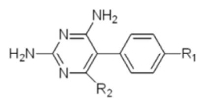
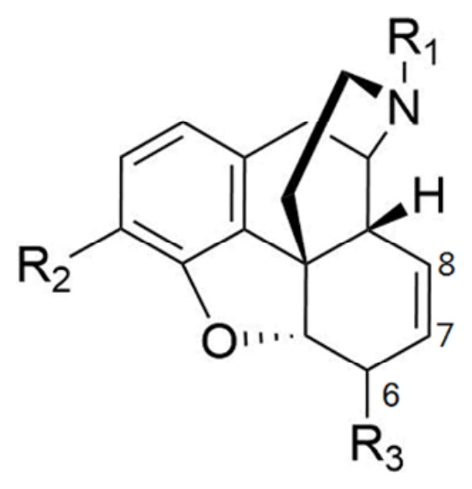
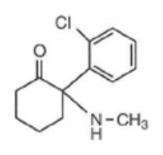
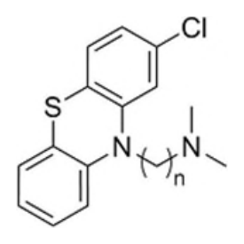
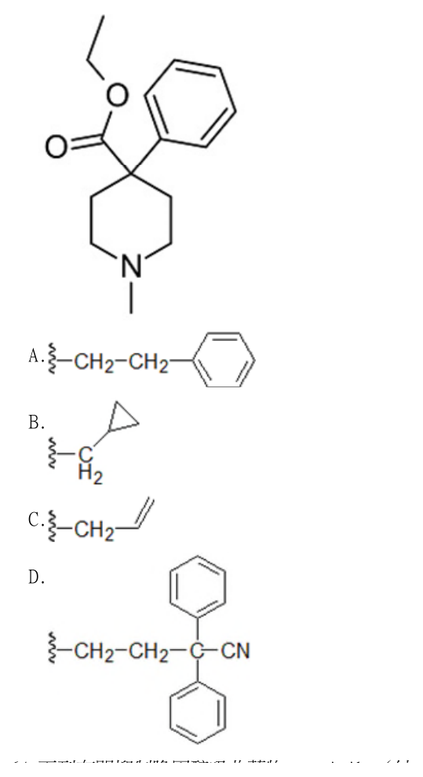
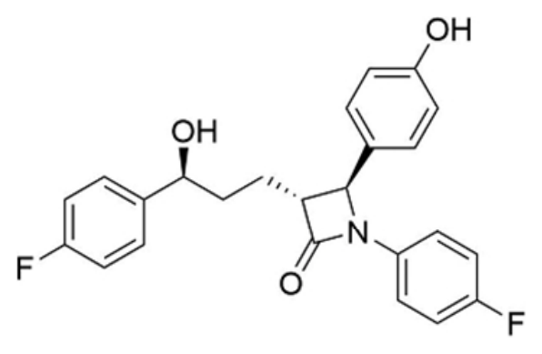
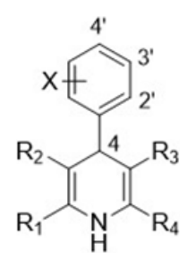
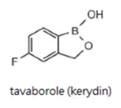
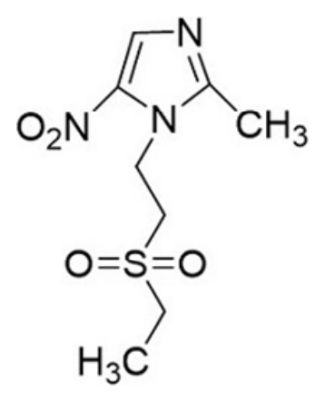

開卷有益 ／
藥師 ／ 藥理學與藥物化學 ／ 115 年115 年藥師藥理學與藥物化學試題與答案
這一頁是民國 115 年藥師藥理學與藥物化學的整份歷屆試題，共 80 題，題目與標準答案出自考選部「國家考試試題及測驗式試題答案」開放資料，其中 69 題附有詳解。以下逐題列出題幹、選項與答案；要計時作答或記錄成績，請用線上練習。
考選部原始場次代碼：115020
線上作答這一科 →
全部 80 題
第 1 題
一藥物的分布體積（volume of distribution）可以反映該藥物與人體組織或血漿蛋白結合的情形，有關藥物 分布體積的敘述，下列何者正確？
（A） 與血漿蛋白結合比例越高者，其分布體積越大（B） digoxin 在骨骼肌肌肉量少的老年人有較大的分布體積（C） theophylline 在同體重的肥胖者或非肥胖者之分布體積大致相等（D） gentamicin 在肋膜積水（pleural effusion）病人的分布體積會變小答案：（C）
詳解與考點 正解：關鍵在於分布體積取決於藥物離開血漿、進入可分布組織的程度。（C）theophylline 的分布不會因脂肪組織增加而等比例擴大；題目以同體重比較時，肥胖與非肥胖者的總分布體積可視為大致相近。這也表示估算時不能把額外脂肪直接視為可分布空間，故選 C。
A：血漿蛋白結合比例升高會減少游離藥物離開血管的比例，使分布體積傾向變小而非變大。分辨關鍵在於血漿蛋白把藥物留在血管內，不是帶入組織內。
B：（B）digoxin 會分布到骨骼肌等組織；老年人骨骼肌量減少時，可供分布的組織空間減少，分布體積應較小。
D：（D）gentamicin 主要分布於細胞外液。肋膜積水增加細胞外液空間，會使其分布體積增加，不會變小。
本題考點：分布體積（volume of distribution，Vd）——判斷 Vd 時看藥物是被限制在血管內，還是能進入組織或體液空間；血漿蛋白結合（plasma protein binding）——結合比例升高通常降低游離藥物的組織分布；細胞外液分布藥物（extracellular-fluid distribution）——水腫、腹水或積液增加時，親水性藥物的 Vd 往增加方向判斷。
第 2 題
有關治療指數（therapeutic index）的敘述，下列何者正確？
（A） therapeutic index = median effective dose/median lethal dose（B） therapeutic index = median effective dose/daily dose（C） therapeutic index = median lethal dose/median effective dose（D） therapeutic index = daily dose/median effective dose答案：（C）
詳解與考點 正解：判準是治療指數比較產生毒性或致死作用的中位劑量，與產生療效的中位劑量相距多遠。依題目採用的 median lethal dose 為毒性端指標，therapeutic index = median lethal dose / median effective dose；比值越大，通常代表療效與毒性之間的安全範圍越寬，故選 C。
A：（A）把分子與分母顛倒後，數值會隨安全範圍變大而變小，不能表達治療指數的原意。
B：daily dose 是實際給藥量，會隨病人、適應症與給藥設計而變動，並不是群體毒性與療效的中位反應指標。
D：（D）daily dose / median effective dose 只是在比較給藥量與有效劑量，沒有納入毒性或致死端點，不能用來衡量安全窗。
本題考點：治療指數（therapeutic index）——遇到安全窗題目時，以毒性端中位劑量除以療效端中位劑量；中位有效劑量（median effective dose，ED50）——用於表示群體中達到指定療效的劑量基準；中位致死劑量（median lethal dose，LD50）——作為毒性端指標時，必須放在治療指數公式的分子。
第 3 題
下列治療肺結核藥物第一線用藥之敘述，何者正確？
（A） isoniazid 主要由肝臟之N-acetyltransferase 代謝（B） rifampin 抑制肝臟cytochrome P450 酵素，使其他藥物之藥效增加（C） ethambutol 抑制結核分枝桿菌細胞膜生合成（D） pyrazinamide 在鹼性環境下藥效較強答案：（A）
詳解與考點 正解：第一線抗結核藥要分開檢核代謝途徑、細菌標的與作用環境。（A）isoniazid 主要在肝臟經 N-acetyltransferase 進行乙醯化代謝；不同乙醯化能力會影響其血中暴露與不良反應風險，故選 A。
B：（B）rifampin 是肝臟 cytochrome P450 的誘導劑，不是抑制劑；併用藥物的代謝可能加快，藥效反而可能下降。
C：（C）ethambutol 抑制結核分枝桿菌細胞壁中 arabinogalactan 的生合成，不是抑制細胞膜生合成。細胞壁與細胞膜都是包被構造，但標的位置不同。
D：（D）pyrazinamide 在酸性環境較能發揮作用，與吞噬細胞內較酸的環境相符；鹼性環境不是其藥效較強的條件。
本題考點：isoniazid 乙醯化代謝（N-acetyltransferase acetylation）——看到 isoniazid 時，以肝臟乙醯化而非 cytochrome P450 反應判斷；rifampin 酵素誘導（enzyme induction）——併用藥效變弱時優先想到代謝加速；抗結核藥作用位置（antitubercular drug targets）——細胞壁合成、細胞膜與酸性環境中的活性要分別辨認。
第 4 題
下列抗癌藥物與其藥理作用標的之配對，何者錯誤？
（A） methotrexate：dihydrofolate reductase（B） irinotecan：topoisomerase II（C） sorafenib：receptor tyrosine kinases（D） 5-fluorouracil：thymidylate synthase答案：（B）
詳解與考點 正解：題幹問的是配對錯誤者，關鍵在於區分兩種 topoisomerase。（B）irinotecan 抑制的是 topoisomerase I，藉此干擾 DNA 複製時單股切斷後的重新接合；不是 topoisomerase II，故選 B。
A：（A）methotrexate 抑制 dihydrofolate reductase，阻斷四氫葉酸再生，配對正確，所以不是答案。
C：（C）sorafenib 可抑制多種 receptor tyrosine kinases，藉由抑制腫瘤細胞與血管新生相關訊號產生作用，配對正確。
D：（D）5-fluorouracil 的活性代謝物抑制 thymidylate synthase，使去氧胸苷酸合成受阻，配對正確。
本題考點：topoisomerase 抑制劑（topoisomerase inhibitors）——看到 irinotecan 時以 topoisomerase I 判斷，不可與作用於 topoisomerase II 的藥混為一談；抗葉酸藥（antifolates）——methotrexate 的標的是 dihydrofolate reductase；嘧啶類似物（pyrimidine analogs）——5-fluorouracil 的辨識點是 thymidylate synthase。
第 5 題
針對罹患estrogen receptor（ER）-positive, human epidermal growth factor receptor 2（HER2）- negative 乳癌的停經後婦女，可使用賀爾蒙相關藥物進行治療，但不包括下列何者？
（A） tamoxifen（B） fulvestrant（C） anastrozole（D） pertuzumab答案：（D）
詳解與考點 正解：題幹限定為停經後、ER-positive、HER2-negative 乳癌，應選能調節雌激素訊號的內分泌治療藥物。（D）pertuzumab 是針對 HER2 的單株抗體，不屬於賀爾蒙相關治療；而且 HER2-negative 並非其治療標的，故選 D。
A：（A）tamoxifen 是 selective estrogen receptor modulator，可拮抗乳癌組織的雌激素受體，因此屬內分泌治療選項。
B：（B）fulvestrant 為 estrogen receptor antagonist and degrader，可降低雌激素受體訊號，屬賀爾蒙相關治療。
C：（C）anastrozole 是 aromatase inhibitor，於停經後可降低周邊組織生成雌激素，屬適用的內分泌治療。
本題考點：乳癌生物標記（breast cancer biomarkers）——先以 ER 與 HER2 分開選擇內分泌治療或標靶治療；選擇性雌激素受體調節劑（selective estrogen receptor modulators）——以 tamoxifen 代表，重點是組織特異性的雌激素受體調節；芳香化酶抑制劑（aromatase inhibitors）——停經後病人需要降低雌激素時，以抑制周邊芳香化酶判斷。
第 6 題
下列抗病毒藥物中，何者的臨床用途僅限於治療A 型流感病毒之感染？
（A） peramivir（B） amantadine（C） oseltamivir（D） zanamivir答案：（B）
詳解與考點 正解：題目要求找出臨床用途僅限 A 型流感者，應從病毒專一的 M2 ion channel 下手。（B）amantadine 阻斷 A 型流感病毒的 M2 proton channel，抑制病毒去殼，因此其作用範圍不及 B 型流感，故選 B。
A、C、D：（A）peramivir、（C）oseltamivir 與（D）zanamivir 都抑制 neuraminidase，可用於 A 型及 B 型流感。三者給藥途徑不同，但共同錯在靶點不是只存在於 A 型流感的 M2 channel。
本題考點：M2 ion channel inhibitors——題幹問僅限 A 型流感時，以 amantadine 的 M2 channel 為辨識點；神經胺酸酶抑制劑（neuraminidase inhibitors）——peramivir、oseltamivir 與 zanamivir 的共同判準是抑制病毒釋放，作用範圍涵蓋 A 型與 B 型流感；流感抗病毒藥靶點（influenza antiviral targets）——先分 M2 channel 與 neuraminidase，再判斷病毒型別範圍。
第 7 題
下列抗黴菌藥物中，何者可干擾麥角固醇（ergosterol）生成，並使黴菌細胞內鯊烯（squalene）堆積而產生 毒性？
（A） flucytosine（B） nystatin（C） posaconazole（D） terbinafine答案：（D）
詳解與考點 正解：關鍵線索是「鯊烯堆積」，這直接指向 squalene epoxidase 的抑制。（D）terbinafine 抑制 squalene epoxidase，既減少 ergosterol 合成，也使具毒性的 squalene 在黴菌細胞內累積，故選 D。
A：（A）flucytosine 進入黴菌細胞後轉化為干擾核酸合成的代謝物，並不抑制 squalene epoxidase。
B：（B）nystatin 是 polyene 類，直接與細胞膜上的 ergosterol 結合並破壞膜通透性；它不是阻斷 ergosterol 的生成。
C：（C）posaconazole 屬 azole 類，抑制 lanosterol 14α-demethylase 而干擾 ergosterol 合成。它看似同樣會影響 ergosterol，但堆積的前驅物不是題目指定的 squalene。
本題考點：squalene epoxidase inhibitors——看到 squalene 堆積時，直接判為 terbinafine 的作用；polyene antifungals——看到直接結合 ergosterol、造成膜孔洞時，判為 nystatin 類機轉；azole antifungals——看到 lanosterol 14α-demethylase 時，辨認為 azole 類而非 terbinafine。
第 8 題
下列何者常用於治療吸蟲（trematodes）感染，為治療血吸蟲病（schistosomiasis）之首選藥物？
（A） albendazole（B） metronidazole（C） ivermectin（D） praziquantel答案：（D）
詳解與考點 正解：題幹同時指出吸蟲感染與血吸蟲病首選，應以廣泛抗吸蟲活性的藥物判斷。（D）praziquantel 可增加寄生蟲對鈣離子的通透性，使蟲體強直性收縮並受損，是血吸蟲病的首選治療，故選 D。
A：（A）albendazole 是廣效驅蟲藥，對多種線蟲與部分絛蟲有效；雖然名稱容易讓人聯想到所有蠕蟲，但血吸蟲病的首選不是它。
B：（B）metronidazole 主要治療厭氧菌及特定原蟲感染，並非治療吸蟲的標準藥物。
C：（C）ivermectin 主要用於某些線蟲與外寄生蟲感染，作用範圍與血吸蟲不同。
本題考點：praziquantel——看到血吸蟲病或多數吸蟲感染時，優先選擇 praziquantel；蠕蟲分類（helminth classification）——先分吸蟲、線蟲與絛蟲，再比對藥物的主要適應症；抗寄生蟲藥選擇（antiparasitic drug selection）——廣效不等於每一種寄生蟲感染的首選，題目問首選時要回到特定病原。
第 9 題
關於凝血酶抑制劑（thrombin inhibitor）之敘述，下列何者錯誤？
（A） dabigatran 半衰期長（約12-17 小時），能口服使用（B） fondaparinux 半衰期長（約15 小時），不易有thrombocytopenia 副作用（C） 腎功能有問題的病人需要調整lepirudin 的劑量（D） tinzaparin 能抑制vitamin K epoxide reductase答案：（D）
詳解與考點 正解：題幹雖統稱抗凝血藥，判斷時仍須把直接凝血酶抑制、factor Xa 抑制與 vitamin K 循環抑制分開。（D）tinzaparin 是 low-molecular-weight heparin，主要藉 antithrombin 增強對 factor Xa 的抑制，並不抑制 vitamin K epoxide reductase；後者是 warfarin 的標的，故選 D。
A：（A）dabigatran 是可口服的 direct thrombin inhibitor，半衰期相對較長，敘述正確，所以不是答案。
B：（B）fondaparinux 經 antithrombin 選擇性抑制 factor Xa，且發生 heparin-induced thrombocytopenia 的風險較低，敘述正確。
C：（C）lepirudin 為 direct thrombin inhibitor，排除與腎功能密切相關；腎功能受損時需要調整劑量，敘述正確。
本題考點：low-molecular-weight heparin——看到 tinzaparin 時，以 antithrombin 介導的 factor Xa 抑制判斷；vitamin K epoxide reductase——看到此酵素時，連結 warfarin 而非 heparin 類藥物；直接凝血酶抑制劑（direct thrombin inhibitors）——dabigatran 與 lepirudin 的辨識重點是直接作用於 thrombin。
第 10 題
下列何者藥物能最有效控制apixaban 所造成的嚴重出血？
（A） andexanet alfa（B） protamine（C） vitamin K1（D） idarucizumab答案：（A）
詳解與考點 正解：關鍵線索是 apixaban 所致嚴重出血。apixaban 是 direct factor Xa inhibitor，而（A）andexanet alfa 為重組 factor Xa decoy，可結合並中和這類藥物的抗凝作用，因此最能作為其特異性逆轉劑，故選 A。
B：（B）protamine 以帶正電特性中和 heparin，主要用於 unfractionated heparin 的逆轉，不能特異性中和 apixaban。
C：（C）vitamin K1 用於恢復 vitamin K-dependent clotting factors 的生成，適合處理 warfarin 相關抗凝作用，不是 direct factor Xa inhibitor 的直接逆轉劑。
D：（D）idarucizumab 是專一結合 dabigatran 的抗體片段。它看似同為直接口服抗凝血藥的解毒劑，但對應的是 thrombin inhibitor，不是 apixaban。
本題考點：direct factor Xa inhibitor reversal——嚴重出血且藥物為 apixaban 時，以 andexanet alfa 作為特異性逆轉判斷；heparin reversal——看到 protamine 時，連結 heparin 而非 direct oral anticoagulants；dabigatran reversal——看到 idarucizumab 時，專門對應 direct thrombin inhibitor dabigatran。
第 11 題
有關免疫抑制劑與其藥理機轉的組合，下列何者錯誤？
（A） tacrolimus—抑制calcineurin（B） sirolimus—抑制molecular target of rapamycin（mTOR）（C） mycophenolate mofetil—抑制pyrimidine synthesis（D） tofacitinib—抑制JAK enzymes答案：（C）
詳解與考點 正解：題幹問機轉配對錯誤者，關鍵在 mycophenolate mofetil 影響的核苷酸種類。（C）mycophenolate mofetil 轉化為 mycophenolic acid 後抑制 inosine monophosphate dehydrogenase，阻斷 de novo guanosine nucleotide synthesis，屬 purine 合成途徑而非 pyrimidine synthesis，故選 C。
A：（A）tacrolimus 與 FKBP 結合後抑制 calcineurin，降低 T-cell activation，配對正確，所以不是答案。
B：（B）sirolimus 抑制 molecular target of rapamycin（mTOR），阻斷淋巴球對生長訊號的反應，配對正確。
D：（D）tofacitinib 抑制 JAK enzymes，干擾多種 cytokine signaling，配對正確。
本題考點：mycophenolate mofetil——看到 inosine monophosphate dehydrogenase 時，判為 purine 的 de novo 合成受阻；calcineurin inhibitors——tacrolimus 的辨識鏈是 FKBP 到 calcineurin；Janus kinase inhibitors——tofacitinib 以 JAK enzymes 為標的，不可與 mTOR inhibitor 混淆。
第 12 題
下列類固醇藥物中，何者屬於長效型（long-acting glucocorticoids）製劑？
（A） cortisone（B） triamcinolone（C） prednisone（D） dexamethasone答案：（D）
詳解與考點 正解：類固醇效力與作用時間要分別判讀；題目問的是 long-acting glucocorticoid。（D）dexamethasone 具有長的生物作用時間，屬長效型 glucocorticoid，故選 D。
A：（A）cortisone 為短效型類固醇，作用時間不符合題目要求。
B：（B）triamcinolone 屬中效型 glucocorticoid，不能因其抗發炎效力而歸入長效型。
C：（C）prednisone 亦屬中效型 glucocorticoid，與 dexamethasone 的長效分類不同。
本題考點：糖皮質素作用時間（glucocorticoid duration of action）——題目問長、中、短效時，以生物作用時間分類，不以單純抗發炎效力判斷；dexamethasone——看到長效型 glucocorticoid 時，優先辨認 dexamethasone；中效型糖皮質素（intermediate-acting glucocorticoids）——prednisone 與 triamcinolone 應和長效型藥物分開記憶。
第 13 題
下列何者能拮抗progesterone receptor，可作為懷孕初期的墮胎藥？
（A） mifepristone（B） cyproterone（C） bicalutamide（D） desmopressin答案：（A）
詳解與考點 正解：題幹的核心條件是拮抗 progesterone receptor 並用於懷孕初期終止妊娠。（A）mifepristone 為 progesterone receptor antagonist，可阻斷孕酮維持妊娠所需的作用，因此可用於早期終止妊娠，故選 A。
B：（B）cyproterone 主要具有 antiandrogen 與 progestogenic 作用，不是 progesterone receptor antagonist。
C：（C）bicalutamide 是 nonsteroidal androgen receptor antagonist，標的是 androgen receptor，與 progesterone receptor 不同。
D：（D）desmopressin 是 vasopressin analogue，主要作用於 vasopressin receptor 調節水分平衡，並非抗孕酮藥物。
本題考點：mifepristone——看到懷孕初期終止妊娠與 progesterone receptor antagonist 時，直接連結 mifepristone；類固醇受體選擇性（steroid receptor selectivity）——辨析 cyproterone、bicalutamide 與 mifepristone 時，先問其標的是 androgen receptor 還是 progesterone receptor；vasopressin analogues——看到 desmopressin 時，以抗利尿而非性荷爾蒙受體作用判斷。
第 14 題
下列藥物中，何者屬於selective estrogen receptor modulators，可抑制骨吸收，且比較不具有乳腺或子 宮內膜增生之副作用？
（A） ibandronate（B） raloxifene（C） denosumab（D） calcitonin答案：（B）
詳解與考點 正解：題幹要求同時具備 selective estrogen receptor modulator 身分、抑制骨吸收，以及較少乳腺與子宮內膜增生作用。（B）raloxifene 在骨組織呈雌激素樣作用以減少骨吸收，在乳腺與子宮內膜則呈拮抗作用，符合題述組合，故選 B。
A：（A）ibandronate 是 bisphosphonate，藉抑制 osteoclast 減少骨吸收，但不是 selective estrogen receptor modulator。
C：（C）denosumab 是 anti-RANKL monoclonal antibody，可抑制 osteoclast 形成；它看似也能減少骨吸收，但沒有題目所問的雌激素受體選擇性。
D：（D）calcitonin 可抑制 osteoclast 活性，並非 selective estrogen receptor modulator，也不以乳腺與子宮內膜的選擇性作用為特徵。
本題考點：selective estrogen receptor modulators——遇到骨保護合併乳腺與子宮內膜拮抗時，以 raloxifene 判斷；骨吸收抑制（bone resorption inhibition）——同樣能減少骨吸收的藥物，仍要依 bisphosphonate、anti-RANKL 或 SERM 的標的區分；組織選擇性雌激素作用（tissue-selective estrogen action）——先比較骨、乳腺與子宮內膜三個組織的作用方向。
第 15 題
長期使用propranolol 或高劑量clonidine 治療高血壓，若驟然停藥，前者可能造成心絞痛或惡化心臟病， 後者會引發高血壓危象（hypertensive crisis），其可能機制為何？
（A） 長期使用propranolol 會誘導心臟血管β2 receptor 表現增加，驟然停藥，會導致低血壓、惡化心臟病（B） 長期使用高劑量clonidine 會誘導突觸後神經元α1 receptor 表現增加，增加交感神經興奮引發高血壓危象（C） 長期使用propranolol 會誘導心臟心肌β1 receptor 表現減少，驟然停藥，造成心絞痛、惡化心臟病（D） 長期使用高劑量clonidine 會誘導突觸前神經元α2 receptor 表達減少，減少負回饋抑制，引發高血壓危象答案：（D）
詳解與考點 正解：關鍵在長期受體調節後突然撤除抑制訊號的反彈效應。高劑量 clonidine 長期刺激突觸前 α2 receptor，會使此負回饋調節下降；驟然停藥時交感神經抑制突然消失，造成交感神經興奮反彈與高血壓危象。（D）正確描述此途徑，故選 D。
A：（A）propranolol 長期阻斷 β receptor 後，驟停會出現兒茶酚胺反應增強，方向是心跳與心肌耗氧上升而可能誘發心絞痛，不是低血壓。
B：（B）clonidine 的主要抑制作用在中樞與突觸前 α2 receptor，不是以突觸後 α1 receptor 增加作為題目所述反彈的核心機制。
C：（C）長期 propranolol 所致的反彈與 β receptor 上調、對兒茶酚胺較敏感有關；受體表現減少無法解釋驟停後心絞痛惡化。
本題考點：受體上調與停藥反彈（receptor upregulation and withdrawal rebound）——長期拮抗後驟停，若受體敏感性上升，應預期原有生理反應反彈；clonidine withdrawal——看到突然停用 clonidine 合併高血壓危象時，以交感神經抑制消失與 α2 receptor 負回饋失衡判斷；β-blocker withdrawal——突然停用 propranolol 時，以心率與心肌耗氧上升解釋心絞痛風險。
第 16 題
下列何者為血管選擇性高、短效型鈣離子管道阻斷劑，禁止使用在急性冠心症？
（A） nifedipine（B） amlodipine（C） verapamil（D） diltiazem答案：（A）
詳解與考點 正解：題幹限定血管選擇性高且短效，並以急性冠心症為禁用情境，這指向短效型 dihydropyridine。（A）nifedipine 可造成快速血管擴張與反射性心搏過速，進而增加心肌耗氧，在急性冠心症可能惡化缺血，故選 A。
B：（B）amlodipine 雖也屬血管選擇性較高的 dihydropyridine，但作用時間較長，與題幹的短效型條件不符。
C：（C）verapamil 為 non-dihydropyridine calcium channel blocker，較明顯作用於心臟傳導與收縮功能，不是題目所述的血管選擇性短效藥。
D：（D）diltiazem 同為 non-dihydropyridine calcium channel blocker，心臟作用較 nifedipine 顯著，不能依血管擴張類似性選入。
本題考點：dihydropyridine calcium channel blockers——看到血管選擇性與短效時，以 nifedipine 的快速血管擴張反應判斷；反射性心搏過速（reflex tachycardia）——急性缺血情境下，快速降血管阻力後的心率上升可能加重心肌耗氧；non-dihydropyridine calcium channel blockers——verapamil 與 diltiazem 要以較強心臟傳導作用和 nifedipine 區分。
第 17 題
下列何者不是loop diuretics 之臨床適應症？
（A） hypokalemia（B） acute renal failure（C） acute pulmonary edema（D） hypertension答案：（A）
詳解與考點 正解：題幹問不是 loop diuretics 適應症者，先看該藥對鉀離子的方向。loop diuretics 增加鈉與水排出時也增加鉀排出，可能造成或惡化 hypokalemia，不能用來治療低血鉀，故選 A。
B：（B）acute renal failure 發生體液滯留時，loop diuretics 可用於控制容量負荷與肺水腫風險；其用途是利尿與容量處置，不是逆轉腎損傷本身。
C：（C）acute pulmonary edema 需要迅速降低體液負荷時，loop diuretics 是常用的利尿治療選項，屬適應症。
D：（D）hypertension 可使用利尿劑控制血壓；尤其合併體液滯留或腎功能不佳時，loop diuretics 可有臨床用途。
本題考點：loop diuretics——看到強效排鈉、排水時，同步聯想鉀流失；低血鉀（hypokalemia）——會使鉀排出增加的利尿劑不可用來矯正低血鉀；容量負荷控制（volume overload management）——急性肺水腫或腎功能不全合併水分滯留時，判斷 loop diuretics 的角色是減少體液負荷。
第 18 題
使用下列何者利尿劑治療高血壓時，可能會引起高血糖、LDL 增加或高尿酸血症，應小心使用於糖尿病、高 血脂或痛風之患者？
（A） furosemide（B） metolazone（C） spironolactone（D） amiloride答案：（A）
詳解與考點 本題經考選部公告一律給分。題幹描述之利尿劑會致高血糖、LDL上升與高尿酸血症，此為thiazide類典型代謝副作用，(B)metolazone屬thiazide-like利尿劑最符合；惟(A)furosemide屬loop利尿劑，亦公認會引起高尿酸血症與血糖代謝異常，兩者副作用譜重疊，難以僅憑高尿酸血症一項排他。(C)spironolactone為保鉀利尿劑無此代謝副作用，(D)amiloride亦不致此類代謝異常，可先排除。因(A)(B)代謝副作用重疊而生爭議，故送分。作答以現行藥理學教材利尿劑副作用比較為準。
第 19 題
腎臟中vasopressin receptors 能調控aquaporin water channel，下列何者利尿劑能選擇性抑制腎臟中 vasopressin V2 receptor，達到利尿作用？
（A） desmopressin（B） conivaptan（C） tolvaptan（D） metolazone答案：（C）
詳解與考點 正解：題幹指定「選擇性抑制腎臟 vasopressin V2 receptor」，因此要找只阻斷 V2 的 vaptan。（C）tolvaptan 是選擇性 V2 receptor antagonist，可減少 collecting duct 對水的再吸收，產生以排水為主的利尿作用，故選 C。
A：（A）desmopressin 是 vasopressin analogue，為 V2 receptor agonist，會增加 aquaporin water channel 的膜上表現並促進水再吸收，作用方向相反。
B：（B）conivaptan 同時拮抗 V1a 與 V2 receptor；它看似同為 vaptan，但不符合題目要求的 V2 選擇性。
D：（D）metolazone 是 thiazide-like diuretic，主要抑制 distal convoluted tubule 的 sodium-chloride cotransporter，不作用於 vasopressin receptor。
本題考點：vasopressin V2 receptor antagonists——題幹要求選擇性 V2 拮抗時，選 tolvaptan；aquaporin water channels——V2 receptor 活化促進水通道進入 collecting duct 膜面，拮抗則增加自由水排出；vaptans——先區分 tolvaptan 的 V2 選擇性與 conivaptan 的 V1a/V2 雙重拮抗。
第 20 題
Flumazenil 對GABAA受體的苯二氮平（benzodiazepine）結合位具有高親和力，其臨床用途為何？
（A） 可做為長效型抗焦慮藥（B） 可做為促進全身麻醉之麻醉誘導劑（C） 可做為苯二氮平過量中毒之解毒劑（D） 可治療苯二氮平生理依賴之戒斷症狀答案：（C）
詳解與考點 正解：題幹指出 flumazenil 對 GABAA receptor 的 benzodiazepine 結合位有高親和力，這是用來競爭性解除 benzodiazepine 作用的特徵。（C）flumazenil 可作為 benzodiazepine 過量中毒或鎮靜作用的逆轉劑，故選 C。
A：（A）flumazenil 不具 benzodiazepine 的抗焦慮致效作用，反而阻斷該結合位，不能作為長效型抗焦慮藥。
B：（B）全身麻醉誘導需要產生中樞抑制的致效作用；flumazenil 為拮抗劑，不能做為麻醉誘導劑。
D：（D）benzodiazepine 生理依賴者使用 flumazenil 可能誘發急性戒斷甚至痙攣，並非治療戒斷症狀的藥物。
本題考點：flumazenil——看到 benzodiazepine 結合位競爭性拮抗與過量中毒時，選 flumazenil；GABAA receptor benzodiazepine site——辨析致效劑與拮抗劑時，先問藥物是增強還是解除 benzodiazepine 效應；benzodiazepine withdrawal——依賴病人不以 flumazenil 處理，因快速拮抗可能引發戒斷反應。
第 21 題
下列中草藥中，何者最不會與抗高血壓藥物產生交互作用，而影響血壓？
（A） Asian ginseng（B） St. John's wort（C） garlic（D） milk thistle答案：（D）
詳解與考點 正解：關鍵在比較各草藥是否有直接改變血壓，或明顯改變降壓藥暴露量的特性。（D）milk thistle 並無典型的升壓、降壓或中樞交感作用；相較之下，它最不會使抗高血壓治療的血壓效果改變，故選 D。
A：Asian ginseng 可能影響交感神經與血管反應，血壓效應也會因製劑與使用情況而異；因此與抗高血壓藥併用時，不能視為對血壓沒有影響。
B：St. John's wort 可誘導藥物代謝酵素與轉運蛋白，使部分降壓藥的體內暴露量下降；看似只是草藥交互作用，實際上會使血壓控制不穩。
C：garlic 具有可能降低血壓的血管作用，與降壓藥併用時可能出現加成效果；分辨關鍵在它本身就可能朝降壓方向作用。
本題考點：草藥與降壓藥交互作用（herb–antihypertensive interaction）——先分辨草藥是否直接改變血壓，再看是否會改變併用藥物的代謝或轉運；St. John's wort 酵素誘導（enzyme induction）——遇到療效下降的交互作用時，優先判斷 CYP 與轉運蛋白誘導造成的藥物暴露量下降。
第 22 題
男孩被診斷為無機鉛中毒（inorganic lead poisoning），血鉛濃度為75μg/dL。下列那一種螯合劑不適合 用於治療？
（A） edetate calcium disodium（B） deferoxamine（C） dimercaprol（D） succimer答案：（B）
詳解與考點 正解：本題以無機鉛中毒為線索，應選出不以鉛為主要螯合目標的藥物。（B）deferoxamine 對鐵離子的螯合特異性高，主要用於鐵負荷過多或鐵中毒，不能作為無機鉛中毒的適當螯合治療，故選 B。
A：edetate calcium disodium 可與鉛形成可排出的複合物，是鉛中毒可用的螯合劑；分辨時須注意它不是用於補充鈣。
C：dimercaprol 可螯合多種重金屬，在嚴重鉛中毒的治療情境中可與其他螯合劑併用，故不是本題所問的不適合者。
D：succimer 是可口服使用的鉛螯合劑，能與鉛結合後促進排除，適用方向與題幹相符。
本題考點：重金屬螯合治療（chelation therapy）——先由毒物辨認螯合劑的金屬選擇性，不能把所有重金屬中毒都套用同一藥；deferoxamine（iron chelator）——看到此藥時優先連結鐵，而非鉛。
第 23 題
下列治療糖尿病的藥物中，何者的主要作用機轉為阻斷胰臟β細胞的ATP-sensitive K+ channel？
（A） voglibose（B） vildagliptin（C） pramlintide（D） nateglinide答案：（D）
詳解與考點 正解：判準是胰臟 β 細胞的 ATP-sensitive K+ channel 被關閉後，細胞膜去極化、鈣離子內流並促進胰島素釋放。（D）nateglinide 為 meglitinide 類胰島素促泌劑，主要就是阻斷此鉀離子通道，故選 D。
A：voglibose 在腸道抑制 α-glucosidase，延緩醣類分解與吸收；作用位置在腸腔刷狀緣，不是胰臟 β 細胞。
B：vildagliptin 抑制 DPP-4，延長內生性 incretin 的作用時間而增加葡萄糖依賴性胰島素分泌；它不直接阻斷 ATP-sensitive K+ channel。
C：pramlintide 為 amylin 類似物，藉由延緩胃排空、抑制餐後 glucagon 等方式控制餐後血糖，並非鉀離子通道阻斷劑。
本題考點：胰島素促泌劑（insulin secretagogue）——看到 sulfonylurea 或 meglitinide 類時，連結 β 細胞 ATP-sensitive K+ channel 關閉與胰島素釋放；降血糖藥作用位置（site of action）——腸道酵素、incretin 系統與胰島細胞通道是常見的誘答分界。
第 24 題
強心劑可能誘發心律不整的作用機制，下列何者錯誤？
（A） milrinone 抑制phosphodiesterase 3，過度增加心肌細胞內cGMP 濃度導致誘發心律不整（B） digoxin 抑制Na +/K +-ATPase，細胞內鈣離子過度負荷會誘發心律不整（C） dobutamine 過度刺激β1 receptor 會誘發心律不整（D） digoxin 與spironolactone 併用時，spironolactone 會抑制digoxin 代謝，誘發心律不整答案：（A）
詳解與考點 正解：PDE3 抑制後累積的是 cAMP，不是 cGMP。（A）milrinone 使心肌細胞內 cAMP 上升，因鈣離子處理與自動性增加而可能誘發心律不整；把它寫成 cGMP 過度增加是訊號路徑錯置，故選 A。
B：digoxin 抑制 Na+/K+-ATPase 後使細胞內鈉上升，降低 Na+/Ca2+ exchanger 排出鈣離子的能力，鈣負荷過多可產生觸發性心律不整。
C：dobutamine 過度刺激 β1 receptor 會提高 cAMP、心率與心肌自動性，因而增加心律不整風險，故非答案。
D：digoxin 與 spironolactone 併用可能使 digoxin 的暴露量或藥效上升，進而增加心律不整風險；此交互作用並非（A）的 cGMP 機轉錯誤。
本題考點：PDE3 抑制劑（PDE3 inhibitor）——PDE3 被抑制時看 cAMP 上升，不能與 cGMP 路徑混淆；digoxin 心律不整（digoxin-induced arrhythmia）——沿著細胞內鈉上升、鈣排出下降與鈣超載判斷；強心劑交互作用（inotrope interaction）——併用藥使 digoxin 暴露或離子平衡改變時，須連結毒性與心律不整風險。
第 25 題
治療acute coronary syndrome 及unstable angina 的抗血小板藥物及其機制之配對，下列何者正確？
（A） aspirin，可逆抑制cyclooxygenase-2（B） clopidogrel，不可逆抑制P2Y12 ADP receptor（C） abciximab，不可逆抑制glycoprotein IIb/IIIa（D） prasugrel，可逆抑制P2Y12 ADP receptor答案：（B）
詳解與考點 正解：本題要分清抗血小板藥物的受體位置與可逆性。（B）clopidogrel 的活性代謝物不可逆抑制 P2Y12 ADP receptor，阻斷 ADP 促進的血小板活化與凝集，故選 B。
A：aspirin 以不可逆乙醯化血小板 cyclooxygenase 為主，尤其是 COX-1，並非可逆抑制 cyclooxygenase-2；可逆性與主要同功酶都寫反。
C：abciximab 的標的是 glycoprotein IIb/IIIa，可阻斷 fibrinogen 介導的血小板交聯；但它以非共價方式與受體高親和力結合，屬可逆結合，停藥後血小板功能可隨藥物解離與新生血小板逐步恢復，與 clopidogrel 等 thienopyridine 類的活性代謝物對 P2Y12 的共價不可逆抑制不同，故「不可逆」三字使（C）的配對錯誤。
D：prasugrel 與 clopidogrel 同屬 thienopyridine 類，其活性代謝物也是不可逆抑制 P2Y12 ADP receptor，故「可逆」二字使配對錯誤。
本題考點：P2Y12 抑制劑（P2Y12 inhibitor）——clopidogrel 與 prasugrel 要一起判為不可逆抑制 ADP 受體；glycoprotein IIb/IIIa 拮抗劑（glycoprotein IIb/IIIa antagonist）——它阻斷血小板凝集的共同末端，不可與 P2Y12 的上游 ADP 訊號混為一談。
第 26 題
下列交感神經藥物中，何者臨床上可用於治療膀胱過動症（overactive bladder）？
（A） mirabegron（B） clonidine（C） midodrine（D） phenylephrine答案：（A）
詳解與考點 正解：膀胱過動症的藥理目標是讓儲尿期的 detrusor 放鬆。（A）mirabegron 為 β3 receptor 致效劑，可鬆弛膀胱逼尿肌並增加膀胱儲尿容量，故可用於 overactive bladder，故選 A。
B：clonidine 為中樞 α2 receptor 致效劑，主要降低交感神經輸出與血壓，沒有以鬆弛 detrusor 作為治療目的。
C：midodrine 為 α1 receptor 致效劑，用於直立性低血壓；其增加平滑肌張力的方向反而可能加重排尿困難。
D：phenylephrine 主要刺激 α1 receptor 造成血管收縮，也會提高尿道出口張力，與 overactive bladder 所需的逼尿肌鬆弛方向不同。
本題考點：β3 receptor 致效劑（β3 agonist）——出現儲尿期逼尿肌過度收縮時，選擇促進 detrusor 鬆弛的藥物；自主神經與排尿（autonomic control of micturition）——β3 偏向膀胱體鬆弛，α1 偏向出口收縮，兩者的臨床方向相反。
第 27 題
下列毒蕈鹼受體拮抗劑（muscarinic antagonists）中，何者最不適合用於治療尿失禁（urinary incontinence）或膀胱過動症（overactive bladder）？
（A） homatropine（B） darifenacin（C） oxybutynin（D） tolterodine答案：（A）
詳解與考點 正解：本題限定的是治療 urge urinary incontinence 或 overactive bladder 的毒蕈鹼受體拮抗劑。（A）homatropine 雖有抗毒蕈鹼作用，但主要不是以膀胱逼尿肌症狀為常規適應症，缺少這些藥物所需的臨床定位，故最不適合，故選 A。
B：darifenacin 對 M3 receptor 具有選擇性，可降低逼尿肌非自主收縮，是 overactive bladder 的治療選項。
C：oxybutynin 藉由抗毒蕈鹼作用減少逼尿肌收縮，適用於急迫性尿失禁或膀胱過動症。
D：tolterodine 為治療 overactive bladder 的抗毒蕈鹼藥物；分辨重點不是是否都能阻斷毒蕈鹼受體，而是是否具有該病症的治療用途。
本題考點：膀胱抗毒蕈鹼治療（bladder antimuscarinic therapy）——看到急迫性尿失禁與逼尿肌過動時，選能抑制逼尿肌 M receptor 的藥物；受體作用與適應症（mechanism versus indication）——同有抗毒蕈鹼活性不代表都適合用於 overactive bladder。
第 28 題
下列藥物中，何者最適合用於治療肌萎縮性脊髓側索硬化症（amyotrophic lateral sclerosis）病人？
（A） riluzole（B） baclofen（C） cyclobenzaprine（D） dantrolene答案：（A）
詳解與考點 正解：肌萎縮性脊髓側索硬化症的治療須找可減少興奮性胺基酸毒性的疾病修飾藥物。（A）riluzole 可降低 glutamate 相關的興奮毒性，為 amyotrophic lateral sclerosis 的治療藥物，故選 A。
B：baclofen 為 GABAB receptor 致效劑，主要用於痙攣性肌張力增加；它可緩解痙攣，卻不是 ALS 的疾病修飾治療。
C：cyclobenzaprine 用於急性肌肉痙攣的短期緩解，並不針對 ALS 的運動神經元退化機轉。
D：dantrolene 直接降低骨骼肌鈣離子釋放，可用於惡性高熱或特定痙攣狀態；其作用位置在骨骼肌，不是 ALS 的核心神經退化機轉。
本題考點：amyotrophic lateral sclerosis 治療（ALS treatment）——題幹出現運動神經元退化時，優先辨識 riluzole 的 glutamate 興奮毒性調節；肌肉鬆弛劑分類（skeletal muscle relaxant）——緩解痙攣的藥物不等於能治療神經退化疾病。
第 29 題
下列氣喘治療藥物中，何者屬於anti-IgE 單株抗體，也可用於治療慢性蕁麻疹？
（A） mepolizumab（B） omalizumab（C） reslizumab（D） dupilumab答案：（B）
詳解與考點 正解：本題同時給了 anti-IgE 與慢性蕁麻疹兩個辨識點。（B）omalizumab 會結合游離 IgE，降低 IgE 與肥大細胞、嗜鹼性球受體結合所引發的反應，亦可用於慢性蕁麻疹，故選 B。
A：mepolizumab 的標的是 interleukin-5，主要降低 eosinophil 相關發炎，並非直接中和 IgE。
C：reslizumab 同樣針對 interleukin-5 與嗜酸性球路徑；看似同為氣喘生物製劑，但標的與 IgE 不同。
D：dupilumab 阻斷 interleukin-4 receptor α，抑制 interleukin-4 與 interleukin-13 訊號，並不是 anti-IgE 單株抗體。
本題考點：anti-IgE 單株抗體（anti-IgE monoclonal antibody）——氣喘合併慢性蕁麻疹時，先由 IgE 標的辨識 omalizumab；氣喘生物製劑標的（asthma biologic targets）——IL-5、IL-4 receptor α 與 IgE 分別對應不同發炎軸，不能只因都用於氣喘就互換。
第 30 題
Ondansetron 預防或治療下列原因引起的嘔吐，何者效果最差？
（A） 放射治療所引起的嘔吐（B） 化療藥物引起的嘔吐（C） 暈車引起的嘔吐（D） 手術引起的嘔吐答案：（C）
詳解與考點 正解：判準是嘔吐是否主要經由 5-HT3 receptor 路徑傳遞。（C）暈車的訊號主要來自前庭系統，常涉及 H1 與 muscarinic receptor，因此 ondansetron 的 5-HT3 阻斷效果最差，故選 C。
A、B：放射治療與化療可促使腸道 enterochromaffin cell 釋放 serotonin，經迷走神經與中樞 5-HT3 receptor 引發嘔吐；（A）與（B）都符合 ondansetron 的主要作用位置。
D：手術後嘔吐也有 serotonin 與 5-HT3 receptor 參與，ondansetron 是常用的預防或治療選項，故非答案。
本題考點：5-HT3 receptor 拮抗劑（5-HT3 antagonist）——化療、放射治療與術後嘔吐時優先連結 serotonin 路徑；暈車治療（motion sickness treatment）——前庭性嘔吐要判斷 H1 或 muscarinic receptor 路徑，而非只看止吐藥這個大類。
第 31 題
關於非類固醇抗發炎藥（NSAIDs）nabumetone 的敘述，下列何者錯誤？
（A） 半衰期短，需一日服用三次（B） 為非選擇性cyclooxygenase 抑制劑（C） 引起的腸胃道副作用比許多其他NSAIDs 温和（D） 其活性代謝物為naphthylacetic acid答案：（A）
詳解與考點 正解：nabumetone 是經代謝後才產生活性的非酸性前驅藥，不能以短半衰期、一天三次給藥來描述。（A）其活性代謝物的作用時間較長，通常不須一日服用三次，因此此敘述錯誤，故選 A。
B：nabumetone 的活性代謝物抑制 cyclooxygenase，整體仍歸於非選擇性 NSAID；不應把較溫和的腸胃道表現誤判為完全 COX-2 選擇性。
C：nabumetone 以非酸性前驅藥形式投與，較少在胃黏膜局部造成酸性刺激，其腸胃道副作用相較許多 NSAIDs 較溫和，故非答案。
D：nabumetone 經代謝形成具活性的 naphthylacetic acid 衍生物，常以 6-MNA 稱之；這正是它以前驅藥形式給藥的關鍵。
本題考點：nabumetone 前驅藥（nabumetone prodrug）——遇到非酸性 NSAID 前驅藥時，先判斷活性是否來自代謝物；NSAID 腸胃道毒性（NSAID gastrointestinal toxicity）——局部酸性刺激與 COX-1 抑制都會影響腸胃道風險，不能只用一個機轉解釋。
第 32 題
關於選擇性COX-2 抑制劑之敘述，下列何者錯誤？
（A） 不易產生腸胃道之副作用（B） 不易產生腎毒性（C） 不易抑制血小板凝集（D） 不具有心臟血管保護作用答案：（B）
詳解與考點 正解：選擇性 COX-2 抑制劑雖較少傷害胃黏膜與血小板，腎臟的 prostaglandin 調節卻仍不能忽略。（B）COX-2 在腎臟參與血流與鈉水調節，選擇性 COX-2 抑制劑仍可造成水腫、血壓上升或腎功能惡化，故「不易產生腎毒性」錯誤，故選 B。
A：保留胃黏膜 COX-1 相關 prostaglandin，通常可減少腸胃道潰瘍與出血風險，故相較非選擇性 NSAIDs 較不易產生腸胃道副作用。
C：血小板主要依賴 COX-1 製造 thromboxane A2，選擇性 COX-2 抑制劑較少直接抑制血小板凝集，敘述正確。
D：這類藥物不具有 aspirin 式的心血管保護效果；抑制內皮 prostacyclin 而未相應抑制血小板 thromboxane A2，反而可能使血栓風險上升。
本題考點：選擇性 COX-2 抑制劑（selective COX-2 inhibitor）——判斷副作用時要把胃、血小板與腎臟分開看，COX-2 選擇性不等於沒有腎毒性；prostacyclin–thromboxane balance——若只降低內皮 prostacyclin 而保留血小板 thromboxane A2，須警覺心血管血栓風險。
第 33 題
有關brivaracetam 藥理性質的敘述，下列何者正確？
（A） 與carbamazepine 併用時，會抑制carbamazepine 的代謝（B） 與phenytoin 併用時，會使phenytoin 的血中濃度降低（C） 對神經細胞囊泡（vesicle）蛋白SV2A 具有高親和力（D） 口服可迅速完全吸收，且高於90%與血漿蛋白結合答案：（C）
詳解與考點 正解：brivaracetam 的辨識核心是突觸小泡蛋白 SV2A。（C）brivaracetam 對 SV2A 具有高親和力，可調節神經傳遞物質釋放並發揮抗癲癇作用，故選 C。
A：brivaracetam 不以抑制 carbamazepine 整體代謝為其典型交互作用；即使併用時需留意個別代謝物變化，也不能據此寫成抑制 carbamazepine 代謝。
B：brivaracetam（尤其在較高劑量）會抑制 CYP2C19，與 phenytoin 併用時是使 phenytoin 血中濃度上升而非降低，（B）把交互作用的方向寫反。
D：brivaracetam 口服吸收快速，但其血漿蛋白結合率低，並非高於 90%；吸收完整不代表蛋白結合必然很高。
本題考點：SV2A 配體（SV2A ligand）——辨識 levetiracetam 或 brivaracetam 時，以突觸小泡蛋白 SV2A 為核心標的；抗癲癇藥交互作用（antiseizure medication interaction）——併用藥的濃度變化必須判斷實際方向，不能由藥物類別直接推論。
第 34 題
下列何者是戒除類嗎啡成癮的治療藥物？
（A） alcohol（B） methadone（C） marijuana（D） nicotine答案：（B）
詳解與考點 正解：戒除類嗎啡成癮的治療要選能穩定 μ-opioid receptor 刺激、減少戒斷症狀與渴求的藥物。（B）methadone 為長效 opioid agonist，可用於 opioid use disorder 的維持或戒斷治療，故選 B。
A：alcohol 本身可造成酒精使用障礙，並非治療 opioid 成癮的替代或維持藥物。
C：marijuana 不屬於標準的 opioid use disorder 藥物治療，不能因同屬精神活性物質就視為戒除類嗎啡的治療。
D：nicotine replacement 或其他尼古丁相關治療針對的是菸草依賴，受體與戒斷處理目標皆不同於 opioid 成癮。
本題考點：opioid use disorder 藥物治療（medication treatment for opioid use disorder）——遇到類嗎啡依賴時，辨識長效 opioid agonist 的維持與戒斷緩解用途；物質使用障礙的對應治療（substance-specific treatment）——不同成癮物質要依其受體與戒斷機轉配對，不能以精神活性物質類別互換。
第 35 題
關於ramelteon 之敘述，下列何者正確？
（A） 是serotonin 受體致效劑（B） 可能增加泌乳素的分泌（C） 具成癮性，會產生明顯的戒斷症狀（D） fluvoxamine 會增加其由肝臟代謝答案：（B）
詳解與考點 正解：ramelteon 是以褪黑激素受體調節睡眠，而非以鎮靜安眠藥的 GABA 路徑為主。（B）它可能改變內分泌軸並增加泌乳素分泌，為其可見的內分泌相關效應，故選 B。
A：ramelteon 為 melatonin MT1 與 MT2 receptor 致效劑，不是 serotonin receptor 致效劑；兩者都可參與睡眠調節，但受體不同。
C：ramelteon 不以成癮與明顯戒斷症狀為典型特徵，這點與部分作用於 GABA 的安眠藥不同。
D：fluvoxamine 抑制 ramelteon 的肝臟代謝酵素 CYP1A2，會降低而非增加其代謝；分辨交互作用時，酵素抑制通常導向受質藥物暴露量上升。
本題考點：melatonin receptor 致效劑（melatonin receptor agonist）——遇到 ramelteon 時連結 MT1/MT2 與睡眠時相調節，而非 serotonin 或 GABA 受體；CYP 酵素抑制（CYP inhibition）——併用抑制劑時，先判斷受質藥物代謝下降與濃度上升的方向。
第 36 題
下列何者不是carbamazepine 的適應症？
（A） 癲癇（B） 三叉神經痛（C） 躁鬱症（D） 帕金森氏症答案：（D）
詳解與考點 正解：carbamazepine 的適應症集中在特定癲癇、三叉神經痛與部分雙相情緒障礙的情境，並不治療帕金森氏症。（D）帕金森氏症的核心是 dopamine 缺乏與相關迴路失衡，carbamazepine 不是其適應症，故選 D。
A：carbamazepine 可用於特定類型的癲癇發作，是其基本的抗癲癇適應症之一。
B：carbamazepine 是三叉神經痛的常用藥物，可降低異常神經放電所造成的疼痛。
C：carbamazepine 具有情緒穩定作用，可用於雙相情緒障礙的特定治療情境，故不是本題所問的非適應症。
本題考點：carbamazepine 適應症（carbamazepine indications）——以癲癇、三叉神經痛與情緒穩定三組用途辨識；帕金森氏症藥物（Parkinson disease drugs）——出現 dopamine 缺乏的運動症狀時，不能誤選鈉離子通道型抗癲癇藥。
第 37 題
使用多巴胺受體作用劑來治療帕金森氏症時，下列何者不是常見的副作用？
（A） 厭食現象（anorexia）（B） 直立性低血壓（orthostatic hypotension）（C） 腹瀉（diarrhea）（D） 遲發性運動困難（tardive dyskinesia）答案：（C）
詳解與考點 本題經考選部公告一律給分。多巴胺受體作用劑常見副作用包括噁心厭食(A)、姿勢性低血壓(B)，(D)遲發性運動困難（tardive dyskinesia）主要與長期使用多巴胺「拮抗劑」如抗精神病藥有關，並非多巴胺致效劑之常見副作用，理論上應為唯一答案；惟(C)腹瀉是否為多巴胺作用劑常見腸胃道副作用（多數教材反列便秘較常見），亦可能判為非常見副作用，與(D)同時構成爭點而生疑義。作答以現行藥理學教材為準。
第 38 題
關於tetrahydrocannabinol（THC）的敘述，下列何者正確？
（A） 會升高眼內壓（B） 會產生噁心嘔吐（C） 會降低食慾（D） 會造成視覺失真答案：（D）
詳解與考點 正解：tetrahydrocannabinol 的中樞精神作用會改變感覺與知覺整合。（D）THC 可造成時間感、空間感或視覺知覺失真，這是其典型精神作用之一，故選 D。
A：THC 可降低而非升高眼內壓，因此「升高」把作用方向寫反。
B：THC 具有止吐用途，可用於特定情境的噁心嘔吐；它不是以產生噁心嘔吐作為典型藥理作用。
C：THC 通常增加食慾，食慾下降與其常見作用方向相反。
本題考點：tetrahydrocannabinol 中樞作用（THC central effects）——看到 THC 時，以知覺改變、食慾增加與止吐作用作為辨識組合；cannabinoid 與眼內壓（cannabinoid effect on intraocular pressure）——判斷眼壓選項時要確認其降低方向。
第 39 題
天然物或是中草藥可能經由影響中樞神經系統而對於緩解特定疾病有幫助，下列何者最不會影響中樞神經系 統？
（A） St. John's wort（B） melatonin（C） ginkgo biloba（D） astragalus root答案：（D）
詳解與考點 正解：題幹比較的是草藥是否以中樞神經系統作用作為緩解症狀的主要特性。（D）astragalus root 的常見藥理討論偏向免疫調節與全身性作用，沒有像其他三者那樣明確以睡眠、情緒或認知中樞作用為主，因此最不會影響中樞神經系統，故選 D。
A：St. John's wort 可影響 monoamine 相關訊號，常被連結到情緒症狀的調節，屬中樞神經系統相關草藥。
B：melatonin 調節晝夜節律與睡眠，作用目標明確涉及中樞睡眠時相調控。
C：ginkgo biloba 常被討論於認知與腦部循環相關用途；雖然臨床效果須依製劑與情境評估，仍不是本題所問最不影響中樞者。
本題考點：中草藥的中樞作用（central nervous system effects of herbal medicines）——先分辨草藥的主要主張是情緒、睡眠、認知，還是免疫與全身性調節；melatonin 晝夜節律（circadian rhythm regulation）——遇到睡眠時相線索時，優先連結中樞節律調控。
第 40 題
Ginkgo 具有多種藥理活性，但不包括下列何者？
（A） 抗凝血作用（B） 增強記憶力（C） 止瀉作用（D） 抗氧化及清除自由基作用答案：（C）
詳解與考點 正解：判準是 ginkgo 的常見藥理特性是否與血小板、認知或氧化壓力有關。（C）止瀉不是 ginkgo 的代表性藥理活性，與題目所列的其他常見作用不同，故選 C。
A：ginkgo 可影響血小板活化因子與血小板凝集，臨床上須留意出血傾向；此類抗凝血相關效應屬其常見辨識點。
B：ginkgo 常被用於認知功能相關訴求，故增強記憶力在此類藥理作用整理中屬非答案；實際效果仍須依製劑與臨床情境判讀。
D：ginkgo 所含成分具有抗氧化與清除自由基的活性，符合其常見藥理特性。
本題考點：ginkgo 藥理活性（ginkgo pharmacological effects）——以抗氧化、血小板相關作用與認知用途作為辨識組合；天然物證據判讀（herbal medicine evidence appraisal）——遇到天然物效果敘述時，先區分代表性藥理活性與未對應的腸胃道用途。
第 41 題 待校
有關抗體偶聯藥物（ADC）常採用的連接子（linker），下列何者屬於非可裂解（noncleavable）？
答案：（C）
第 42 題 待校
下列藥物中，何者最不易在胃中被吸收？
答案：（C）
第 43 題
有關抗癌藥trastuzumab，其結構組成為何？
（A） human constant region＋murine variable region（B） human Fc region＋murine Fab region（C） murine complementarity-determining regions（CDRs），抗體其餘部分則源自human（D） murine Fc region＋human Fab region答案：（C）
詳解與考點 正解：trastuzumab 是針對 HER2 的 humanized monoclonal antibody。humanized 抗體保留直接決定抗原辨識的 murine complementarity-determining regions（CDRs），其餘框架區與恆定區改為 human 序列；（C）正符合這種 CDR grafting 設計，故選 C。
A：human 恆定區加上完整 murine 可變區，表示整個抗原結合可變區仍為 murine，屬於 chimeric antibody 的組成方式，並非只保留 CDRs 的 humanized antibody。
B：human Fc 區加上 murine Fab 區仍保留整個 murine 抗原結合部分，與（A）同樣是以較多 murine 序列構成的 chimeric antibody，不是 trastuzumab 的 humanized 結構。
D：murine Fc 區加上 human Fab 區會使恆定區仍帶有 murine 成分，既不符合 humanized 抗體以 human 恆定區降低免疫原性的原則，也不是 trastuzumab 的組成。
本題考點：人源化單株抗體（humanized monoclonal antibody）——判斷時看 murine 成分是否限於 CDRs，其餘抗體骨架與恆定區應為 human 序列；嵌合抗體（chimeric antibody）——若整個可變區仍源自 murine、只換成 human 恆定區，應歸為 chimeric 而非 humanized。
第 44 題
下列何種官能基在生理環境下，主要呈鹼性狀態？
（A） diarylamine（B） amidine（C） amide（D） nitrile答案：（B）
詳解與考點 正解：判準是共軛酸能否被共振穩定。amidine 質子化後形成 amidinium ion，正電荷可在兩個氮原子間離域，故其共軛酸穩定、在生理環境下主要呈質子化的鹼性型態；（B）正確，故選 B。
A：diarylamine 的氮孤對電子可與兩個芳香環共軛，降低接受質子的能力，因此鹼性遠弱於 amidine。
C：amide 的氮孤對電子與羰基共振，已參與穩定化而不易再接受質子；分辨關鍵在 amidine 的正電荷可離域，amide 則是孤對電子先被羰基牽制。
D：nitrile 氮原子的孤對電子位於 sp 軌域、束縛較強，通常只有很弱的鹼性，生理 pH 下不會像 amidine 一樣主要質子化。
本題考點：胺類鹼性（amine basicity）——比較鹼性時先看氮的孤對電子是否可供接受質子；amidine/amidinium ion——共軛酸的正電荷可離域時，質子化型態較穩定，鹼性因此上升；amide resonance——氮孤對電子與羰基共振會降低其鹼性，不能只因含氮就判為強鹼。
第 45 題
藥物分子與受體結合時，下列何者的鍵能最高？
（A） 氫鍵（B） 共價鍵（C） 離子鍵（D） 凡得瓦爾力答案：（B）
詳解與考點 正解：題目比較的是藥物與受體之間單一鍵結的鍵能。共價鍵以電子對共享形成，鍵能遠高於非共價作用力，藥物若以此方式與受體結合，常會造成持久甚至不可逆的作用；（B）正確，故選 B。
A：氫鍵可協助藥物辨識受體的供體與受體位置，但屬可逆的非共價作用，鍵能低於共價鍵。
C：離子鍵由相反電荷的靜電吸引形成，看似很強，但在含水的生理環境會受溶媒與電荷屏蔽影響，仍不及共價鍵的鍵能。
D：凡得瓦爾力來自短距離的瞬時偶極作用，單一作用力最弱，通常須以多個接觸面累積才對結合親和力有明顯貢獻。
本題考點：受體鍵結作用力（receptor binding forces）——比較鍵能時，共價鍵高於離子鍵、氫鍵與凡得瓦爾力；不可逆受體作用（irreversible receptor binding）——藥物形成共價鍵時，判斷重點是受體恢復往往須等待新受體生成，而不是單靠藥物濃度下降。
第 46 題 待校
根據結構活性關係（SAR），下列藥物結構何者為cholinergic agonist？
答案：（A）
第 47 題
下列何者為cabergoline 之主要代謝反應？
（A） 水解（B） 氧化（C） 還原（D） 乙醯化答案：（A）
詳解與考點 正解：cabergoline 的主要生物轉化以可水解的醯胺／脲類連結為切入點，因此主代謝反應為水解；（A）正確，故選 A。
B：氧化雖是許多藥物常見的第一相代謝反應，但不是 cabergoline 的主要代謝途徑；判斷時要看分子中是否有特別容易被切割的水解位點。
C：還原通常須有可被還原的官能基並由相應酵素催化，並非 cabergoline 的主要代謝型態。
D：乙醯化是將乙醯基轉移至受質的結合反應，與 cabergoline 主要經水解失去側鏈的代謝特徵不符。
本題考點：水解代謝（hydrolysis）——藥物含有易被酵素切割的醯胺、酯或脲類連結時，先評估水解是否為主要代謝途徑；第一相代謝（phase I metabolism）——氧化、還原與水解都屬第一相反應，應依藥物結構而非只憑常見度判斷。
第 48 題
體內何種酵素過度活化，可導致codeine 具呼吸抑制之風險？
（A） CYP2C（B） CYP3A4（C） CYP2D6（D） UGT2B7答案：（C）
詳解與考點 正解：codeine 的呼吸抑制風險來自其轉為 morphine 後的 μ-opioid receptor 作用。CYP2D6 催化 codeine 的 O-demethylation 產生 morphine；此酵素過度活化時 morphine 生成量增加，呼吸抑制風險隨之上升，故選 C。
A：CYP2C 並非 codeine 轉為 morphine 的主要酵素，無法解釋因過度活化而增加 morphine 暴露的機轉。
B：CYP3A4 主要使 codeine 進行 N-demethylation 形成 norcodeine，這條路徑不會增加具主要止痛與呼吸抑制作用的 morphine。
D：UGT2B7 參與 morphine 等分子的 glucuronidation，屬結合代謝步驟；題幹所問的危險訊號是 codeine 生物活化成 morphine，而非其後續結合。
本題考點：codeine 生物活化（codeine bioactivation）——遇到 codeine 的療效或毒性差異時，先連結 CYP2D6 產生 morphine；藥物基因體學（pharmacogenomics）——代謝酵素活性過高會使前驅藥轉成活性代謝物的速度與暴露量上升，需特別留意高風險不良反應。
第 49 題 待校
下列何者抗巴金森氏症作用最強？
答案：（A）
第 50 題
下列降血糖藥，何者為α-glucosidase 抑制劑？
（A） metformin（B） acarbose（C） sitagliptin（D） pioglitazone答案：（B）
詳解與考點 正解：α-glucosidase 位於腸道刷狀緣，抑制它會延緩複合醣分解為可吸收單醣。acarbose 正是此類抑制劑，主要降低餐後血糖上升幅度，故選 B。
A：metformin 主要降低肝臟糖質新生並改善胰島素敏感性，並不直接抑制腸道 α-glucosidase。
C：sitagliptin 是 DPP-4 inhibitor，藉由減少 incretin 的分解來增加葡萄糖依賴性的胰島素反應；同樣與餐後血糖有關，但作用位置不是腸道醣類分解酵素。
D：pioglitazone 是 PPAR-γ agonist，可改善周邊組織胰島素敏感性，並非阻斷醣類在腸道被水解。
本題考點：α-glucosidase inhibitor——餐後高血糖合併大量澱粉或雙醣攝取時，判斷重點是延緩腸道醣類分解與吸收；DPP-4 inhibitor——若藥物是保留 endogenous incretin 的作用，應歸於 DPP-4 抑制而非 α-glucosidase 抑制。
第 51 題 待校
下列何種藥物作用在H +/K+-ATPase 而抑制胃酸分泌？
答案：（A）
第 52 題 待校
下列何者為治療痛風的藥物？
答案：（D）
第 53 題
下圖結構中R1與R2為何種取代基時，則為pyrimethamine？

（A） R1＝H，R2＝CH3（B） R1＝F，R2＝C2H5（C） R1＝Cl，R2＝C2H5（D） R1＝CH3，R2＝F答案：（C）
詳解與考點 正解：pyrimethamine 是 diaminopyrimidine 類葉酸拮抗劑，其結構辨識組合為含 chlorine 的苯基取代與 ethyl 取代；以題目通式標示即（C）R1 = Cl、R2 = C2H5，故選 C。
A：R1 = H、R2 = CH3 同時缺少 pyrimethamine 所需的 chlorine 與 ethyl 取代，不能對應其標準結構。
B：R2 = C2H5 雖保留 ethyl，卻把（C）的 chlorine 換為 fluorine；同屬鹵素仍可能看似合理，但結構辨識必須符合確切取代基。
D：R1 = CH3、R2 = F 既沒有正確的 chlorine，也沒有 ethyl 取代，與 pyrimethamine 的取代型態不符。
本題考點：pyrimethamine 結構辨識（pyrimethamine structure）——辨識 diaminopyrimidine 類藥物時，需同時核對雜環骨架與各取代基，不能只憑同為鹵素或烷基判定；結構活性關係（structure-activity relationship）——近似取代基如 Cl 與 F 的位置或種類不同，仍可代表不同化合物。
第 54 題
Anastrozole 結構中，何種基團可與aromatase 的heme 結合，而抑制其氧化反應？
（A） morpholine（B） oxirane（C） quinazoline（D） triazole答案：（D）
詳解與考點 正解：anastrozole 抑制 aromatase 的關鍵是 azole 環氮可與其 heme iron 配位。triazole 具備可提供孤對電子的環氮，能干擾 heme 所進行的氧化反應；（D）正確，故選 D。
A：morpholine 雖含氮與氧的雜環，但不是 anastrozole 用來配位 aromatase heme iron 的 azole 基團。
B：oxirane 是環氧基，常與親核基團反應；它不具 triazole 環氮的 heme 配位特徵。
C：quinazoline 也是含氮芳香雜環，因而容易與 triazole 混淆；分辨關鍵在 anastrozole 的 heme 配位基是 triazole，而非 quinazoline 骨架。
本題考點：aromatase inhibitor——非類固醇型 aromatase inhibitor 的判斷重點是含氮雜環與 heme iron 配位；heme coordination——遇到 CYP 類氧化酵素抑制時，若結構有 azole 環氮，應優先判斷是否藉由阻斷 heme 催化功能。
第 55 題
下列頭孢菌素中，何者可口服且結構具vinyl 基團？
（A） cefotaxime（B） ceftizoxime（C） ceftibuten（D） cefixime答案：（D）
詳解與考點 正解：題目要求口服給藥與含 vinyl 基團兩個條件都成立。cefixime 為可口服的頭孢菌素，且其結構具 vinyl 取代基；（D）同時符合，故選 D。
A：cefotaxime 主要以注射途徑使用，不能因同屬第三代頭孢菌素就符合口服條件。
B：ceftizoxime 亦非題目所指兼具口服使用與 vinyl 基團的藥物，頭孢菌素世代相近不代表側鏈與給藥途徑相同。
C：ceftibuten 雖可口服，是最具誘答性的選項，但不具題目指定的 vinyl 結構特徵；雙條件題必須同時核對藥物動力學與側鏈結構。
本題考點：頭孢菌素結構與給藥途徑（cephalosporin structure and administration）——比較同代頭孢菌素時，口服與否須由個別結構及吸收特性判斷；vinyl substituent——題目指定側鏈時，先以結構特徵篩選，再確認給藥途徑，避免只用藥物分類作答。
第 56 題
抗病毒藥valacyclovir 相對於acyclovir，最主要優點為何？
（A） 降低抗藥性（B） 降低毒性（C） 提高口服生體可用率（D） 提高安定性答案：（C）
詳解與考點 正解：valacyclovir 是 acyclovir 的 L-valyl ester prodrug，設計目的在改善腸道吸收。其可利用腸道 peptide transporter 提高吸收量，進而提高 acyclovir 的口服生體可用率；（C）正確，故選 C。
A：valacyclovir 進入體內後仍轉為 acyclovir，並不以改變病毒突變或降低抗藥性為主要優點。
B：兩者最終活性成分相同，valacyclovir 的核心設計不是將 acyclovir 的毒性降到更低，而是增加可被口服吸收的比例。
D：酯化形成 prodrug 在本題的主要功能是提升轉運與吸收，不是提高原藥的化學安定性。
本題考點：前驅藥（prodrug）——比較原藥與酯類前驅藥時，先判斷改造是為了吸收、分布、活化或安定性；口服生體可用率（oral bioavailability）——原藥吸收受限而前驅藥可利用腸道轉運蛋白時，主要優點通常是增加進入全身循環的有效比例。
第 57 題
Atenolol、esmolol、propranolol 均屬β-adrenergic blockers，下列敘述何者錯誤？
（A） atenolol 是β1-selective blocker（B） propranolol 為non-selective blocker（C） esmolol 是前驅藥（prodrug），需經esterase 水解才有活性（D） 三者中以propranolol 親脂性最高，最易進入CNS答案：（C）
詳解與考點 正解：關鍵在 esmolol 的酯鍵是使作用迅速終止，不是使藥物變成活性。esmolol 本身投與後即具 β1 阻斷活性，經 esterase 水解後形成活性較低的代謝物而作用短暫；（C）把失活寫成前驅藥活化，故為錯誤敘述，故選 C。
A：atenolol 對 β1 受體較具選擇性，屬 cardioselective β-adrenergic blocker，這是正確敘述，故非答案。
B：propranolol 同時阻斷 β1 與 β2 受體，為 non-selective blocker，這是正確敘述，故非答案。
D：propranolol 相較 atenolol 與 esmolol 親脂性較高，較容易進入 CNS；親脂性與受體選擇性不同，不能將兩者混為同一判準，故此敘述正確。
本題考點：前驅藥與失活代謝（prodrug versus metabolic inactivation）——藥物需轉化後才產生活性才是 prodrug，若原藥先有效而水解縮短作用時間則是失活；β-adrenergic blockers——比較 β 阻斷劑時，分別核對 β1 選擇性、β2 阻斷與親脂性，不要以單一特性推論全部藥理表現。
第 58 題
下列何種局部麻醉藥因pH 值問題，不建議使用注射劑型？
（A） procaine（B） articaine（C） ropivacaine（D） benzocaine答案：（D）
詳解與考點 正解：局部麻醉藥若缺乏可在酸性製劑中質子化的鹼性胺基，水溶性不足，便不適合配成水性注射劑。benzocaine 的胺為芳香一級胺、鹼性極弱（pKa 約 2.5），須極酸的條件才能成鹽，生理相關 pH 下主要為非離子型，適合局部塗布而不建議注射；（D）正確，故選 D。
A：procaine 含可質子化的胺基，可製成水溶性鹽類供注射使用，並非因 pH 問題而排除注射劑型。
B：articaine 具有可離子化胺基，可依酸鹼狀態形成較易溶於水的鹽類，是可注射的局部麻醉藥。
C：ropivacaine 也是可質子化的弱鹼性局部麻醉藥；分辨關鍵在是否有足以形成水溶性鹽類的胺基，而非只看是否同屬局部麻醉藥。
本題考點：局部麻醉藥離子化（local anesthetic ionization）——判斷注射劑可行性時，先看藥物能否質子化成水溶性鹽；benzocaine——缺乏適合離子化的鹼性胺基時，水溶性差，臨床上偏向外用而非水性注射。
第 59 題
下圖為morphine 類藥物的結構通式，有關morphine 類止痛藥之敘述，下列何者錯誤？

（A） 屬phenanthrene 架構（B） R1為含有cyclopropylmethyl 基團則會產生μ受體拮抗作用（C） R2為OH 可增加與μ及κ受體親和力（D） R3為ketone 及C-7、C-8 之間為單鍵，可降低μ受體親和力答案：（D）
詳解與考點 正解：morphine 類結構活性關係中，R3 為 ketone 並使 C-7、C-8 成為單鍵的 hydromorphone 類修飾，不是降低 μ 受體親和力的變化，反而可增強 μ 受體相關活性；（D）將方向說反，故為錯誤敘述，故選 D。
A：morphine 類核心可歸為 phenanthrene 架構，這是正確敘述，故非答案。
B：在含三級胺的相應位置引入 cyclopropylmethyl，可使 μ 受體的內在活性往拮抗方向轉變；完全拮抗或部分致效仍會受其他取代基影響，故此敘述符合其結構活性關係。
C：R2 為 OH 可增進與 μ 及 κ 受體的交互作用，這是正確的取代基效應，故非答案。
本題考點：morphine 類結構活性關係（morphine structure-activity relationship）——判讀 phenanthrene opioid 時，要把 N 取代基對致效／拮抗方向的影響與環上氧取代基的親和力影響分開看；μ-opioid receptor affinity——遇到 ketone 與 C-7、C-8 飽和化的組合時，不能直覺判為活性下降，需依其 hydromorphone 類效應判斷。
第 60 題
下列何者不是ketamine（結構如下圖）之代謝產物？

（A） 3-hydroxynorketamine（B） 4-hydroxynorketamine（C） 5-hydroxynorketamine（D） 6-hydroxynorketamine答案：（A）
詳解與考點 正解：ketamine 先經 N-demethylation（主要由 CYP3A4、CYP2B6 催化）形成 norketamine，再可進行 hydroxylation 形成多種 hydroxynorketamine。已報導的羥化位置在環己酮環的 4、5、6 位，即 4-hydroxynorketamine、5-hydroxynorketamine 與 6-hydroxynorketamine，其中 (2R,6R)-hydroxynorketamine 因抗憂鬱活性最受矚目；文獻未報導 3 位的羥化產物，故（A）3-hydroxynorketamine 不在代謝物之列，故選 A。
B：4-hydroxynorketamine 是 norketamine 在環己酮環 4 位羥化的已知代謝物，故不是題目所問的非代謝物。
C：5-hydroxynorketamine 是 norketamine 在 5 位羥化的已知代謝物，不能因其與 ketamine 本身名稱不同就排除。
D：6-hydroxynorketamine 是 norketamine 在 6 位氧化後的重要 hydroxylated metabolite，其 (2R,6R) 立體異構物最受研究關注，故非答案。
本題考點：ketamine metabolism——辨識 ketamine 代謝物時，先由 N-demethylation 連到 norketamine，再判斷後續 hydroxylation 產物；相位一氧化（phase I oxidation）——代謝物命名中的 hydroxy 通常提示氧化羥化，但仍須核對可被羥化的正確位置。
第 61 題 待校
下列何者為zolpidem 之主要代謝產物？
答案：（A）
第 62 題
下圖化合物兩個氮原子間的碳數（n）為多少時，其抗思覺失調症的活性最佳？

（A） 1（B） 2（C） 3（D） 4答案：（C）
詳解與考點 正解：抗思覺失調症藥物的典型兩氮 pharmacophore，環上氮與末端鹼性氮之間以 3 個碳原子的鏈長最能提供合適的空間距離；因此 n = 3 時活性最佳，即（C），故選 C。
A：n = 1 時兩個氮原子距離過短，末端鹼性氮難以取得此類抗精神病藥所需的最佳受體結合幾何。
B：n = 2 雖比（A）增加彈性，但仍未達到 3 個碳原子的最佳間距，是最容易因只記得短鏈而誤選的替代值。
D：n = 4 時間距與構形自由度都過大，會偏離 3 個碳鏈所提供的最佳藥效團排列。
本題考點：抗精神病藥藥效團（antipsychotic pharmacophore）——含環上氮與末端鹼性氮的結構，先數兩者間 linker 的碳數；三碳間隔規則（three-carbon spacer rule）——此類結構以 n = 3 為最佳時，較短或較長的碳鏈都應優先排除。
第 63 題
將meperidine（結構如下圖）之N 上甲基，修飾為下列何者時，可作為止瀉劑？

本題選項為上圖中的 A／B／C／D，請對照圖片作答。
答案：（D）
第 64 題
下列有關抑制膽固醇吸收藥物ezetimibe（結構如下圖）之敘述，何者正確？

（A） phenol 可接上葡萄糖醛酸（glucuronic acid）形成具活性代謝物（B） lactam 環變大可增加活性（C） lactam 水解後活性加強（D） 對位氟原子可促進苯環氧化以增加活性答案：（A）
詳解與考點 正解：ezetimibe 的 phenolic OH 可進行 glucuronidation，生成的 ezetimibe glucuronide 仍保有抑制膽固醇吸收的活性；（A）正確，故選 A。
B：ezetimibe 的 β-lactam 環大小與立體結構是活性關鍵，任意把 lactam 環變大不會增加活性，反而會破壞必要的結構配置。
C：lactam 水解會破壞 azetidinone 骨架，並非將 ezetimibe 活化；分辨關鍵在 glucuronidation 發生於 phenolic OH，而不是水解 β-lactam 環。
D：對位 fluorine 通常用以降低芳香環被氧化代謝的傾向，不能解讀為促進苯環氧化來增加活性。
本題考點：ezetimibe glucuronidation——藥物帶有 phenolic OH 時，判斷是否形成 glucuronide 要再看代謝物是否仍具藥理活性；β-lactam pharmacophore——含 azetidinone 環的藥物若發生環水解，通常先判斷核心藥效團是否遭破壞，而非假設活性上升。
第 65 題
Statin 降血脂藥物可能會因為下列何種酵素被抑制，而增加橫紋肌溶解之副作用？
（A） lipoprotein lipase（B） CYP3A4（C） 7α-hydroxylase（D） desmolase答案：（B）
詳解與考點 正解：部分 statin 需由 CYP3A4 代謝。若 CYP3A4 被抑制，這些 statin 的血中濃度會升高，肌肉毒性進而可能發展為橫紋肌溶解；（B）正確，故選 B。
A：lipoprotein lipase 參與富含三酸甘油脂脂蛋白的水解，並非決定 statin 體內濃度的主要代謝酵素。
C：7α-hydroxylase 參與膽酸生合成途徑，與 CYP3A4 抑制造成特定 statin 累積的交互作用不同。
D：desmolase 主要與類固醇生成相關，並不負責本題所指 statin 的代謝清除；分辨關鍵在藥物濃度上升來自代謝受阻，不是降血脂路徑本身被抑制。
本題考點：CYP3A4 drug interaction——遇到 CYP3A4 substrate 合併酵素抑制時，先預測血中濃度與劑量相關毒性上升；statin myotoxicity——判斷橫紋肌溶解風險時，要區分由代謝抑制造成的暴露增加與不同 statin 本身的代謝途徑。
第 66 題
下列有關clonidine 之敘述，何者正確？
（A） 結構中具有pyridine 雜環基團（B） 藥理活性作用類似methoxamine（C） 主要代謝為aromatic hydroxylation（D） 口服生體可用率差，建議靜脈注射給藥答案：（C）
詳解與考點 正解：clonidine 的主要生物轉化為芳香環 hydroxylation，後續可再進行結合代謝；（C）正確，故選 C。
A：clonidine 的含氮雜環是 imidazoline，不是 pyridine；辨識含氮雜環時，須看環內氮原子數與雙鍵排列，不能只因皆含氮就視為相同骨架。
B：clonidine 是 α2-adrenergic agonist，可降低交感神經輸出；methoxamine 主要為 α1-adrenergic agonist，兩者受體選擇性與生理效應不同。
D：clonidine 具有可用的口服生體可用率，臨床上可採口服或經皮給藥，並非因口服吸收差而建議靜脈注射。
本題考點：clonidine metabolism——辨識 clonidine 代謝時，先連結其芳香環 hydroxylation；α-adrenergic receptor selectivity——比較 clonidine 與直接血管收縮劑時，先分 α2 的中樞交感抑制與 α1 的周邊血管收縮；imidazoline ring——藥物化學題遇到 clonidine 結構時，應辨識 imidazoline 而非 pyridine。
第 67 題
下列有關強心苷digoxin 之敘述，何者錯誤？
（A） 具有C-12 OH，極性大於digitoxin（B） C-3 OH 連接的醣基為3 個digitoxoses（C） digoxin 主要經由肝臟代謝（D） 結構中digoxigenin 即具有活性答案：（C）
詳解與考點 正解：digoxin 的主要排除途徑是腎臟以未變化藥物排泄，而不是主要靠肝臟代謝；（C）把主要清除器官說反，故為錯誤敘述，故選 C。
A：digoxin 比 digitoxin 多了 C-12 OH，極性因此較大，這是正確敘述，故非答案。
B：digoxin 在 C-3 OH 所連接的糖鏈由 3 個 digitoxoses 組成，這是其強心苷結構特徵，故非答案。
D：digoxigenin 是 digoxin 的 aglycone，仍保有 steroid-lactone 的強心活性核心；糖基會影響藥物動力學與受體交互作用，但不表示 aglycone 必然無活性，故此敘述正確。
本題考點：digoxin elimination——判斷 digoxin 的累積與交互作用時，優先看腎功能與腎臟排除，而非假設主要肝代謝；cardiac glycoside structure——比較 digoxin 與 digitoxin 時，先核對 steroid aglycone 的羥基數及 C-3 上的糖鏈；aglycone activity——糖苷去糖後仍可能保有核心藥理活性，不能把糖基有助活性誤解為唯一活性來源。
第 68 題
下列1,4-dihydropyridine 鈣離子通道抑制劑中（結構通式如下圖），何者之取代基R1≠R4？

（A） amlodipine（B） felodipine（C） clevidipine（D） nisoldipine答案：（A）
詳解與考點 正解：1,4-dihydropyridine 鈣離子通道抑制劑需依通式所標示的位置逐一比對取代基。amlodipine 在 R1 與 R4 的取代基不同，故（A）符合題意，故選 A。
B：felodipine 在題目通式所標示的 R1 與 R4 為相同取代基，不能因其芳香環帶有多個取代基就判為不相等。
C：clevidipine 在題目通式所標示的 R1 與 R4 亦為相同取代基，與（A）的不對稱取代型態不同。
D：nisoldipine 的 R1 與 R4 在此通式中相同；分辨關鍵是對照指定的兩個位置，而不是只比較各藥整體結構看起來是否複雜。
本題考點：1,4-dihydropyridine structure-activity relationship——比較同類鈣離子通道阻斷劑時，先依通式定位 R1、R4，再核對是否對稱取代；取代基定位（substituent mapping）——結構題的答案取決於標示位置，藥名相近或同屬同一藥物類別不能取代逐位比對。
第 69 題
下列有關alteplase 之敘述，何者錯誤？
（A） 為組織纖溶酶原活化劑（B） 為蛋白酶（C） 為單株抗體藥（D） 可由基因重組技術製得答案：（C）
詳解與考點 正解：alteplase 的身分是重組組織纖溶酶原活化劑（tissue plasminogen activator，tPA）。它是具有蛋白酶活性的酵素，將 plasminogen 活化為 plasmin 以分解纖維蛋白；（C）為單株抗體藥把生物製劑的類型混為一談，故選 C。
A：（A）為組織纖溶酶原活化劑符合 alteplase 的藥理分類。它藉由活化 plasminogen 啟動纖溶，並非以抗體中和特定抗原。
B：（B）為蛋白酶正確。alteplase 屬 serine protease，其催化活性是將 plasminogen 轉成能分解 fibrin 的 plasmin。
D：（D）可由基因重組技術製得正確。alteplase 是以 recombinant DNA technology 製備的人類 tPA 蛋白質製劑。
本題考點：組織纖溶酶原活化劑（tissue plasminogen activator）——看到 plasminogen 轉為 plasmin 時，判斷為促纖溶酵素，不是抗凝血藥；絲胺酸蛋白酶（serine protease）——以催化受質蛋白水解來判別，不能因同屬生物製劑就歸類為單株抗體；重組蛋白藥物（recombinant protein therapeutics）——先分清產物是酵素、抗體或受體融合蛋白，再連結其製備方式與作用機轉。
第 70 題 待校
下列何者不是前驅藥（prodrug）？
答案：（D）
第 71 題
下列有關propylthiouracil 之敘述，何者錯誤？
（A） 可抑制甲狀腺素的生成（B） 可抑制周邊T4之去碘化（deiodination）（C） 孕婦不可使用（D） 可能造成肝毒性答案：（C）
詳解與考點 正解：propylthiouracil 的孕期使用不是絕對禁忌；是否使用須衡量母胎風險與肝毒性，但（C）孕婦不可使用的絕對敘述不正確。propylthiouracil 在妊娠早期可作為抗甲狀腺藥物的選項，故選 C。
A：（A）可抑制甲狀腺素的生成正確。propylthiouracil 抑制 thyroid peroxidase 催化的碘化與偶聯反應，因而降低 T3、T4 的新生合成。
B：（B）可抑制周邊 T4 之去碘化正確。propylthiouracil 還會抑制周邊 T4 轉為活性較高 T3 的去碘化，這是它與 methimazole 的區別。
D：（D）可能造成肝毒性正確。propylthiouracil 可引起嚴重肝損傷，因此治療期間須留意肝毒性相關症狀與檢驗變化。
本題考點：thioamide 抗甲狀腺藥（thioamide antithyroid drugs）——判斷甲狀腺素新生合成時，看 thyroid peroxidase 的碘化與偶聯是否被抑制；周邊去碘化（peripheral deiodination）——propylthiouracil 可同時減少 T4 轉為 T3，methimazole 則不以此為主要作用；孕期藥物選擇（medication use in pregnancy）——遇到「不可使用」等絕對措辭時，先區分禁忌與需依孕期及風險評估選用。
第 72 題
下列何種離子無法阻斷甲狀腺的鈉碘同向運送蛋白（sodium/iodide symporter）？
（A） SCN -（B） ClO4 -（C） I-（D） HCO3 -答案：（D）
詳解與考點 正解：甲狀腺的 sodium/iodide symporter（NIS）只會與特定陰離子競爭或受其抑制；（D）HCO3- 不是該運送蛋白的受質或典型競爭性抑制離子，因此無法阻斷 NIS，故選 D。
A：（A）SCN- 可與 I- 競爭 NIS 的運送位點，會抑制甲狀腺對碘離子的攝取。
B：（B）ClO4- 是 NIS 的典型競爭性抑制離子，能阻止甲狀腺碘離子濃縮。
C：（C）I- 是 NIS 的正常受質；若以示蹤碘攝取判讀，大量非標記 I- 可競爭運送位點並降低攝取，因此不能歸為完全無法阻斷的離子。
本題考點：鈉碘同向運送蛋白（sodium/iodide symporter，NIS）——判斷抑制物時，先看陰離子能否競爭 I- 的運送位點；競爭性抑制（competitive inhibition）——SCN- 與 ClO4- 會降低碘離子攝取，重點在運送層級而非甲狀腺激素合成後段；甲狀腺碘捕捉（thyroid iodide trapping）——區分受質、競爭離子與無關離子，避免把所有帶負電的離子都視為 NIS 抑制物。
第 73 題 待校
下列何者為diclofenac 之結構？
答案：（D）
第 74 題 待校
下列何者是meclofenamic acid 的活性代謝物？
答案：（B）
第 75 題
抗黴菌藥tavaborole（結構如下圖），其作用機制為：

（A） 插入黴菌細胞膜，導致細胞內容物外漏（B） 抑制β-1,3-D-glucan synthase，阻止細胞壁合成（C） 抑制Δ 14-reductase，抑制ergosterol 生合成，阻止細胞壁合成（D） 結合於tRNA 末端之adenosine，阻止蛋白質生合成答案：（D）
詳解與考點 正解：tavaborole 的 oxaborole 結構會在 fungal leucyl-tRNA synthetase 的 editing site 捕捉 tRNA 末端 adenosine，阻斷蛋白質生合成；（D）結合於 tRNA 末端之 adenosine 最符合此機轉，故選 D。
A：（A）插入黴菌細胞膜而使內容物外漏是 polyene 類藥物的典型機轉，並非 tavaborole。
B：（B）抑制 β-1,3-D-glucan synthase 是 echinocandin 類阻斷細胞壁合成的方式，與 tRNA synthetase 無關。
C：（C）所述的 sterol 還原酶靶點不屬 tavaborole；而且 ergosterol 是細胞膜成分，不是細胞壁成分。
本題考點：leucyl-tRNA synthetase 抑制（leucyl-tRNA synthetase inhibition）——看到 tavaborole 的 oxaborole 結構時，判斷為干擾 tRNA editing 與蛋白質生合成；抗黴菌藥作用位置（antifungal drug targets）——細胞膜、細胞壁與蛋白質生合成是不同層級，須先配對藥物類別再判斷；含硼藥效團（boron pharmacophore）——硼可與 tRNA 末端核糖形成加合物，據此辨識其特殊酵素抑制方式。
第 76 題
依據CDK4/6 inhibitors 的SAR，下列何種基團可與hinge region adenine site 結合？
（A） 2-aminopyrimidine（B） 2-hydroxyacetic acid（C） piperazine（D） stilbene答案：（A）
詳解與考點 正解：CDK4/6 inhibitors 的 hinge region adenine site 需要能模擬 adenine 氫鍵排列的雜芳香環；（A）2-aminopyrimidine 具有適當的環上氮原子與胺基，可與 hinge region 形成關鍵氫鍵，故選 A。
B：（B）2-hydroxyacetic acid 缺乏可模擬 adenine 的平面含氮雜芳環骨架，不能提供該結合位點所需的氫鍵幾何排列。
C：（C）piperazine 的可質子化胺常用於改善溶解度或伸向 solvent-exposed 區域，但不是與 hinge adenine site 配對的核心雜芳環。
D：（D）stilbene 主要提供疏水且平面的芳香延伸，缺少與 hinge region 建立特異性氫鍵所需的受體與供體排列。
本題考點：protein kinase hinge binding（蛋白激酶 hinge 區結合）——判讀 kinase inhibitor 的核心骨架時，優先找能模擬 adenine 的含氮雜芳環；2-aminopyrimidine（2-胺基嘧啶）——環氮與胺基的氫鍵排列適合嵌入 adenine site；藥物化學結構活性關係（structure-activity relationship，SAR）——先區分核心結合藥效團與改善溶解度、疏水填補或溶媒區的取代基。
第 77 題
下列何種藥物較不會代謝生成具肝毒性的quinoneimine？
（A） dasatinib（B） gefitinib（C） lapatinib（D） cabozantinib答案：（D）
詳解與考點 正解：quinoneimine 的肝毒性通常與芳胺或相關芳香基團的氧化生物活化有關。dasatinib、gefitinib 與 lapatinib 都帶有可被氧化的芳香胺或 anilino 結構，羥化後可再氧化成親電子的 quinoneimine；（D）cabozantinib 的兩個苯胺氮均已醯胺化（cyclopropane-1,1-dicarboxamide），沒有游離芳胺可供氧化，較不具形成此類 quinoneimine 的前驅結構特徵，故選 D。
A：（A）dasatinib 具有可進行氧化生物活化的芳胺相關結構，在本題的結構比較中仍有形成反應性 quinoneimine 代謝物的可能。
B：（B）gefitinib 的 anilino 結構可作為氧化生物活化的警訊；看似只是連接 quinazoline 的取代基，實際上會影響反應性代謝物風險。
C：（C）lapatinib 亦帶有可被氧化活化的芳胺相關結構，不能因其同為 kinase inhibitor 就視為與 cabozantinib 有相同的代謝安全性。
本題考點：quinoneimine 生物活化（quinoneimine bioactivation）——看到可氧化的芳胺或 aminophenol 類結構時，要考慮是否生成親電子性代謝物；結構警訊（structural alert）——同一治療類別的藥物仍可能因芳香取代基不同而有不同的反應性代謝風險；肝毒性與代謝（metabolism-mediated hepatotoxicity）——判斷時看代謝後的電親性產物，而非只看原型藥是否含有芳香環。
第 78 題
抗原蟲藥（結構如下圖），其名稱為：

（A） metronidazole（B） tinidazole（C） nitazoxanide（D） diloxanide furoate答案：（B）
詳解與考點 正解：（B）tinidazole 是 5-nitroimidazole 類藥物，辨識重點為 ethylsulfonylethyl 側鏈，故選 B。
A：（A）metronidazole 同為 5-nitroimidazole，但其側鏈是 hydroxyethyl，沒有 tinidazole 的 ethylsulfonylethyl 特徵。
C：（C）nitazoxanide 具 nitrothiazole-benzamide 骨架，不是 5-nitroimidazole 類的側鏈變化。
D：（D）diloxanide furoate 不具 nitroimidazole 環，其 dichloroacetamide 骨架與 tinidazole 不同。
本題考點：5-nitroimidazole 類藥物（5-nitroimidazoles）——先辨識 nitroimidazole 核心，再以 N-側鏈區分 metronidazole 與 tinidazole；抗原蟲藥結構辨識（antiprotozoal drug identification）——同為抗原蟲藥時，不能只按適應症分類，須回到雜環核心與取代基判讀；含硫側鏈（sulfonylethyl side chain）——看到 ethylsulfonylethyl 取代基時，可用來辨識 tinidazole。
第 79 題
Taxane 類抗癌藥具有下列何種雜環結構？
（A） pyran（B） tetrahydrofuran（C） oxetane（D） lactam答案：（C）
詳解與考點 正解：Taxane 類抗癌藥的特徵性含氧雜環是四員環醚（C）oxetane。其緊張的四員環是 taxane 骨架中用於結構辨識的重要部分，故選 C。
A：（A）pyran 是六員含氧雜環。它雖也屬環狀醚，但環大小與 taxane 的 oxetane 不同。
B：（B）tetrahydrofuran 是五員含氧雜環，與四員的 oxetane 僅差一個環原子，正是容易混淆的結構分類。
D：（D）lactam 是含有醯胺羰基的環狀醯胺，不是 taxane 類所考的四員環醚。
本題考點：oxetane（氧雜環丁烷）——看到四員環且其中一個原子為氧時，判斷為 oxetane；Taxane 類骨架（taxane scaffold）——辨識 paclitaxel、docetaxel 等時，可用特徵性 oxetane 區分其他抗癌藥骨架；雜環環大小（heterocycle ring size）——pyran、tetrahydrofuran、oxetane 分別為六員、五員、四員含氧環，先數環原子再命名。
第 80 題
下列有關bortezomib 之敘述，何者錯誤？
（A） 為boronic acid 衍生物（B） 結構具pyrazine 環（C） 為酪胺酸激酶抑制劑（D） 可治療多發性骨髓瘤答案：（C）
詳解與考點 正解：bortezomib 的主要標的是 26S proteasome，而不是 tyrosine kinase；（C）為酪胺酸激酶抑制劑錯置了藥物標的，故選 C。
A：（A）為 boronic acid 衍生物正確。其 boronic acid 藥效團可與 proteasome 催化位點的 threonine 形成可逆性結合。
B：（B）結構具 pyrazine 環正確。這個含氮芳香環是 bortezomib 結構的一部分，不能因其非主要藥效團而忽略。
D：（D）可治療多發性骨髓瘤正確。抑制 proteasome 會影響蛋白質恆定與細胞存活，因此 bortezomib 用於多發性骨髓瘤治療。
本題考點：蛋白酶體抑制劑（proteasome inhibitor）——看到 bortezomib 時，直接連結 26S proteasome，不可誤歸為 kinase inhibitor；硼酸藥效團（boronic acid pharmacophore）——硼酸可與催化 threonine 可逆結合，是辨識 bortezomib 機轉的關鍵；多發性骨髓瘤（multiple myeloma）——將 proteasome inhibition 與漿細胞腫瘤的治療用途配對。
其他年度
回到藥師藥理學與藥物化學的年度總覽 ，
或到藥師題庫首頁 看其他科目。
題目與標準答案出自考選部「國家考試試題及測驗式試題答案」開放資料。依中華民國《著作權法》第 9 條第 1 項第 5 款，
依法令舉行之各類考試試題不得為著作權之標的，得自由利用。詳解為 AI 整理的學習輔助，
並非官方標準答案 ；中華民國法規會修訂，引用前請對照現行版本查證。